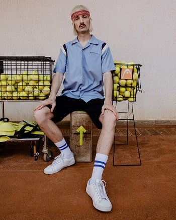
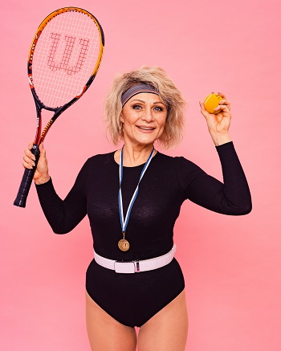
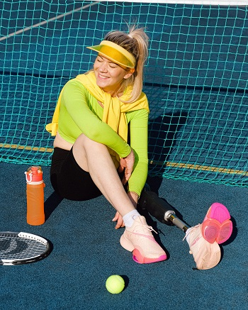
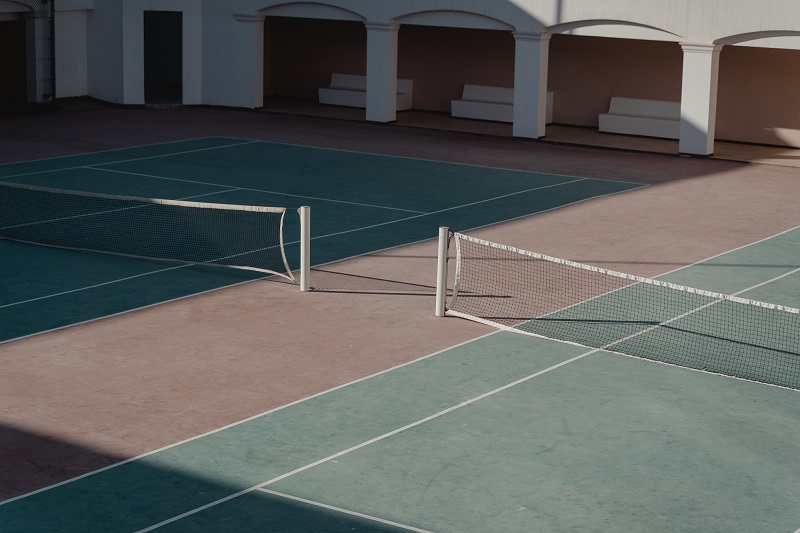

Not sure about your level? It's OK, our coaches are former Wimbledon champions and they are happy to teach you play like a Pro!
Playing tennis is much more fun when you can try your skills in a real tournament. Join us and maybe you'll become a new star of our club.
It doesn't have to be all about sports. At our weekly social gatherings you can make new friends and enjoy delicious cakes between the doubles!
All our courts are outdoor and equipped according to the standarts of International Tennis Federation and are ready for a game any time.
20 Atlantic View St, Wakopmund, 10008
members@atlantictennis.com
0812657489
visitors@atlantictennis.com
0812657490